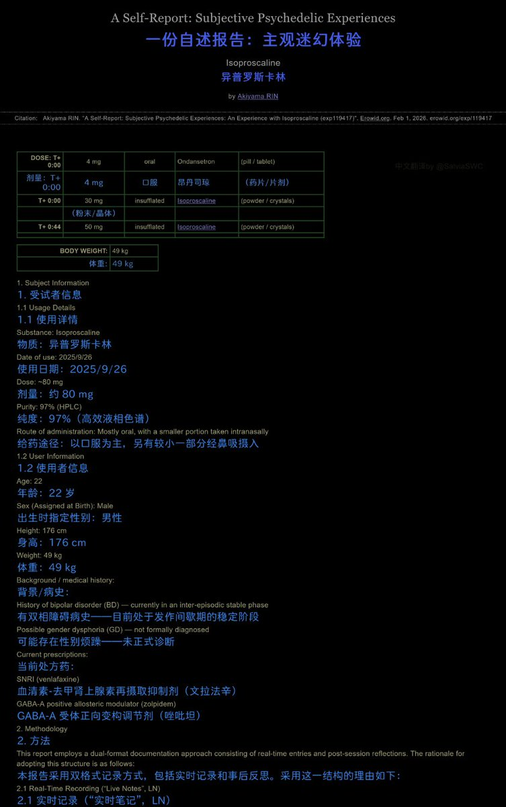
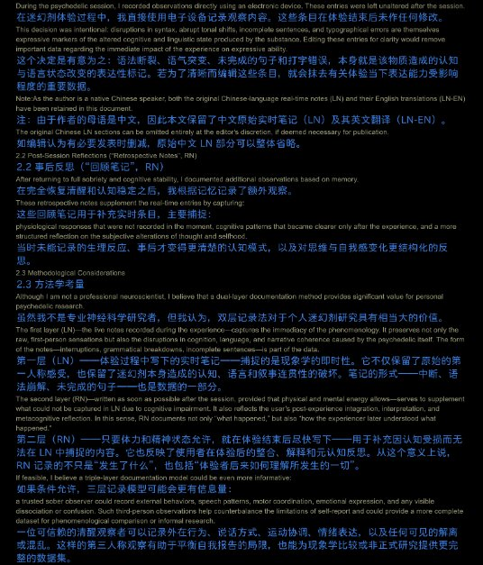
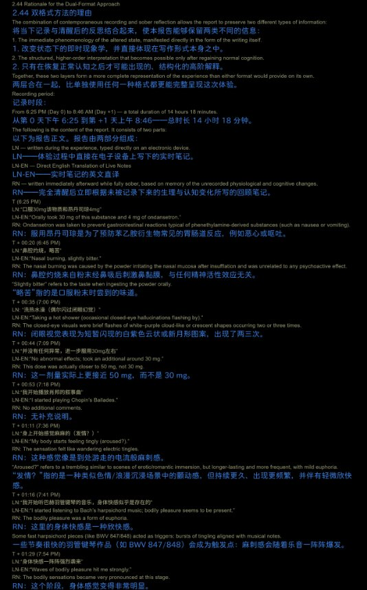
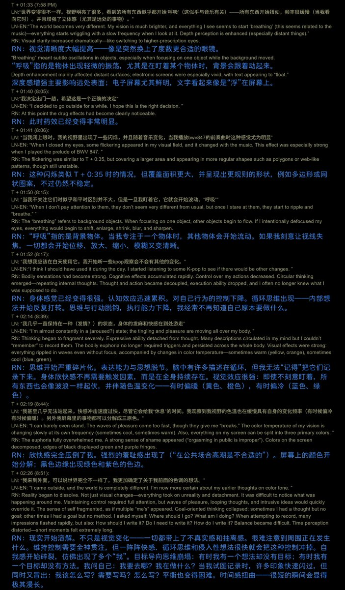

@SalviaSWC 异普会有这么明显的视觉幻觉嘛，这倒是跟舒尔金老爷子记录的不同呢，不过我还以为今年得禁掉iso呢，结果没禁，我手头还有250mg，改天试试（





药物报告day27——国人MTF服用isoproscaline致幻的报告
一名国人跨性别者服用isoproscaline,一种苯乙胺类精神活性物质，这是ta的精神状态发生的变化🤓
文风很专业呢，很有中国版的舒尔金的感觉🥹好奇是哪位推u，吃好吃的不跟大家说，还跑到erowid上放洋屁(bushi)😡
全文链接：https://t.co/Gg1CajLR13 https://t.co/qLj97ob9gq https://t.co/KFyc6WIBvB
一名国人跨性别者服用isoproscaline,一种苯乙胺类精神活性物质，这是ta的精神状态发生的变化🤓
文风很专业呢，很有中国版的舒尔金的感觉🥹好奇是哪位推u，吃好吃的不跟大家说，还跑到erowid上放洋屁(bushi)😡
全文链接：https://t.co/Gg1CajLR13 https://t.co/qLj97ob9gq https://t.co/KFyc6WIBvB